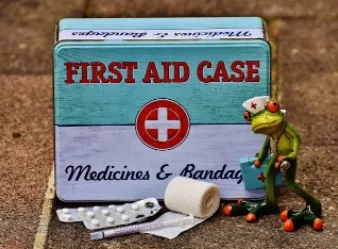
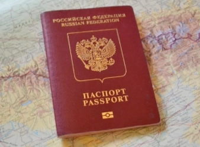
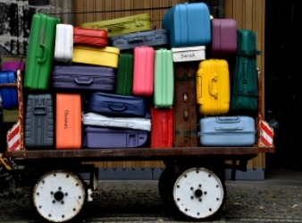
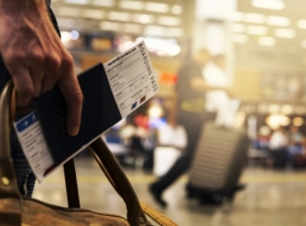
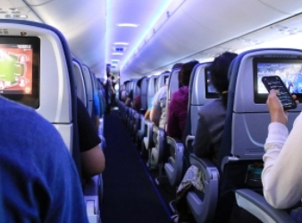

-
Дорожная аптечка туриста
Список длинный, но он не должен вас пугать! Мой многолетний опыт путешествий показывает, что лучше привезти из отпуска нераспечатанные лекарства, чем искать их во время поездки, особенно в другой стране. Так что взять с собой?
- энтеросорбент (активированный уголь, Энтеросгель или Смекта);
- антимикробные средства при кишечной инфекции (Энтерофурил или Фталазол);
- пробиотики и эубиотики для восстановления микрофлоры кишечника (Хилак-форте, Линекс или Бифиформ);
- Регидрон для восстановления водного баланса;
- антигистаминные препараты при аллергии (Фенистил, Зиртек в каплях или Зодак);
- при простуде от боли в горле (Ингалипт, Гексорал-спрей), кашля (Синекод, Гербион, Амброксол, Амбробене), насморка (Називин, Санорин, Пиносол, Аквамарис);
- от боли в ушах (Отипакс);
- глазные гапли (сульфацил натрия (Альбуцид), Ципромед);
- жаропонижающие и болеутоляющие средства (Нурофен, Панадол);
- средства от укачивания;
- средства от ушибов;
- бинт, ватные палочки, перекись водорода, пластырь бактерицидный;
- от зуда после укусов насекомых (Фенистил-гель, Псило-бальзам);
- электронный термометр.
-
Как пересекать границу с детьми по новым правилам
ВАЖНО!
С 1 марта 2024 года в России начали действовать новые правила выезда детей до 14 лет за границу.
Федеральная Служба Безопасности разъяснила новые правила пересечения государственной границы РФ с детьми в возрасте до 14 лет. Теперь ребенку потребуется документ, удостоверяющий гражданство.
Для детей до 14 лет при выезде за границу требуются следующие документы: заграничный паспорт
Для стран, в которые въезд разрешён по внутреннему паспорту гражданина России (Абхазия, Казахстан, Кыргызстан, Беларусь и Южная Осетия) требуется один из документов:
заграничный паспорт
свидетельство о рождении со штампом о российском гражданстве
свидетельство о приобретении гражданства РФ по рождению со штампом о российском гражданстве
Если ребёнок «вписан» в загранпаспорт одного из родителей, то обязательно предъявление свидетельства о рождении со штампом о российском гражданстве.
-
Первый раз в аэропорту. Для туристов, которые летят впервые: как не растеряться и чем заняться?
ДО ПРИБЫТИЯ В АЭРОПОРТ
1. Во-первых, радоваться и предвкушать приятный полет и смену обстановки. Во-вторых, быть внимательным и успеть на свой рейс.
2. Рассчитываем время прибытия
Лучший способ это узнать — это почитать на сайте аэропорта их рекомендации. Но если такой возможности нет, то можно рассчитать время прибытия, зная некоторые факты.
Большинство аэропортов рекомендуют приезжать в аэропорт не позднее, чем за два часа до вылета. В некоторых особо крупных (или особо плохо оптимизированных) аэропортах приезжать следует за три часа. Например, Домодедово в Москве.
Если вы новичок в полетах, а аэропорт, из которого, вам нужно вылетать — немаленький — смело приезжайте за три часа — все успеете и будете меньше нервничать. Если на рейс вы зарегистрированы онлайн и летите только с ручной кладью — в этом случае вы экономите еще 10-30 минут.
3. Узнаем, из какого терминала вылет
Как правило, на посадочном талоне (если вы зарегистрировались онлайн) или на листе с информацией о вашем бронировании номер терминала указывается рядом с названием или стоит последней отдельной цифрой/буквой в названии.
Если никак не можете найти — посмотрите в интернете — возможно, у этого аэропорта только 1 терминал или четко понятно, откуда вылетают все международные рейсы.
В АЭРОПОРТУ
4. Смотрим на табло вылетов (departures) и ищем свой рейс
Искать удобно, так как все вылеты отсортированы по времени. Вам нужно обязательно проверить номер рейса для того, чтобы убедиться, что вы нашли именно ваш. Также смотрите название авиакомпании. Это нужно, чтобы попасть на нужную посадку — в крупных аэропортах особенно в сезон отпусков рейсы в один и тот же город могут вылетать почти в одно и то же время.
Итак, мы нашли нужную строчку с нашим рейсом. Смотрим на крайнюю правую ячейку — если она пуста, значит, регистрация на рейс еще вообще не началась, и можно расслабиться. За 2 или 2,5 часа до вылета тут появятся цифры — это номера стоек регистрации, куда вам нужно подойти для получения посадочного талона, сдачи багажа. Также в статусе рейса будет написано — check in — это означает, что регистрация уже началась.
Кстати, еще о надписях на табло. Вот вам суперкраткий словарик
check in — регистрация на рейс
delay — задержка рейса
cancel — отмена рейса. В случае отмены найдите представителей вашей авиакомпании в аэропорту и уточните у них, что вам делать. Если их найти не можете — покажите вашу бронь и выразительно кивните на табло любому сотруднику аэропорта — он сориентирует вас.
last call — «последний звонок» — регистрация вот-вот закончится, бегите со всех ног к стойке, если вы этого еще не сделали.
go to gate — идите к гейту — надпись показывается примерно за 2-3 минуты до начала посадки на самолет
boarding — посадка в самолет, в это время вы строго должны быть у нужного гейта.
5. Идем к стойке регистрации
Когда видите номера стоек (даже если сама надпись check in еще не появилась) — тут же направляйтесь к ним, не стоит мешкать, потому что вы можете оказаться в конце очереди, а вам, как новичку, лучше быть ближе к ее началу.
На стойке:
показываем паспорт и бронь билета,
просим место у окна, если хочется
сдаем багаж
получаем посадочный талон
узнаем, куда нужно идти дальше (даже если вы вообще не знаете языка) после того, как все процедуры за стойкой закончились, просто сделайте вопросительное лицо и промычите, крутя головой: «аааээээ??» — поверьте, вас не пошлют, а направят в нужное место.
Смотрим посадочный талон и видим, что там появилось другое время — как правило, на 20-30 минут раньше времени вылета — это и есть время посадки (boarding time) и именно к этому времени вам нужно будет подойти к гейту, номер которого также есть на вашем посадочном талоне.
До этого времени вам нужно успеть пройти досмотр на предмет запрещенных вещей и пройти пограничный контроль, если между странами он существует.
6. Идем на досмотр
Снова не задерживаясь идем на досмотр — именно туда вам покажут путь на стойке регистрации. На досмотре ручную кладь, а также все металлическое и компьютерное (ремни, ключи, монетки, ноутбук, планшет, телефон и т.д.) нужно будет положить в специальную коробочку, а самим в это время пройти через металлодетектор.
Если на вас ремень, обувь с металлическими вставками и т.д. - снять придется и их. Эти процедуры довольно быстрые, но всегда есть вероятность, что на кого-то понадобится больше времени, и очередь задержится.
7. Паспортный контроль, дьюти-фри и зона гейтов
После прохождения досмотра вы оказываетесь уже в зоне гейтов, ура! Сверьте часы и посмотрите на табло с расписанием в этой части аэропорта — иногда бывает так, что за час до взлета номер гейта переносится — верьте в первую очередь тому, что написано на табло. В крайнем случае вы всегда можете показать свой посадочный талон работнику аэропорта — он вам поможет.
После контроля, если время еще есть — загляните в duty-free магазины, выпейте чашечку кофе перед полетом. Но следите за временем — к назначенному подходите к гейту. Заранее не стоит — будете просто томиться в ожидании там, но и опаздывать не следует.
Подойдя к гейту, убедитесь, что на табло у него горит номер именно вашего рейса (но, если посадка еще не началась по времени, табло может не работать, это нормально).
Всё! Становитесь в очередную очередь, показывайте ваш паспорт и посадочный талон работнику и — добро пожаловать в самолет!
-
Сроки действия загранпаспорта. Путешествуйте уверенно!
Краткая информация по популярным направлениям.
Загранпаспорт — важный документ для путешествий, и в каждой стране свои правила его действия. Если срок действия загранпаспорта истекает в ближайшее время, путешественнику могут отказать в посадке на рейс или не пустить в страну по прилете.
Египет, Таиланд, Вьетнам, Китай, ОАЭ, Марокко, Иран, Индонезия, Шри-Ланка, Индия, Катар: загранпаспорт должен быть действителен минимум 6 месяцев со дня въезда.
Турция: срок действия паспорта для граждан РФ — не менее 120 дней с даты въезда (4 месяца)
Азербайджан, Сербия: срок действия паспорта строго не менее 3 месяцев со дня окончания поездки.
Мальдивы, Гонконг, Куба: паспорт должен действовать минимум 30 дней со дня въезда.
Сейшелы, Маврикий, Армения, Узбекистан, Киргизия, Казахстан: паспорт должен быть действителен на весь срок поездки.
По внутреннему российскому паспорту можно въехать: Абхазия, Армения (если гражданин России старше 14 лет и прибывает в страну самолетом), Беларусь, Казахстан, Киргизия.
-
Что делать, если потеряли багаж
В зоне прилета аэропорта ОБРАТИТЕСЬ на стойку утери багажа Lost&Found или к представителю авиакомпании, потерявшей багаж.
ЗАПОЛНИТЕ две формы на английском или языке страны прилета для поиска багажа. Опишите цвет, материал, размер багажа и перечислите содержимое.
ПРЕДЪЯВИТЕ багажную бирку, которая при регистрации на рейс приклеивается к посадочному талону.
Если багаж оформлен НА НЕСОВЕРШЕННОЛЕТНЕГО пассажира, то претензию к авиакомпании от его имени может представить законный представитель (родитель, опекун, попечитель).
ПОИСК осуществляется в течении 21 дня. Если багаж не находят за установленный срок, то направляете письменную претензию в авиакомпании для компенсации.
ОТСЛЕДИТЬ багаж можно в международной системе поиска WorldTracer.
ПРИ ПОВРЕЖДЕНИИ, письменная претензия в адрес Авиакомпании должна быть предъявлена в течении 7 дней со дня получения багажа.
-
Что делать, если потеряли загранпаспорт
1. Отправляйтесь в Консульство России
Ваш первый пункт назначения — консульство. Список стран, где есть дипломатические представительства России, можно посмотреть на сайте Консульского департамента МИД. Там указаны адреса, приёмные часы и телефоны, в том числе для срочных вопросов. Если вы оказались в городе, где консульства нет, придётся ехать в другой.
Хорошая новость: записываться на приём заранее не нужно. Для форс-мажорных ситуаций двери всегда открыты, без бюрократии. Чтобы лишний раз не нервничать, позвоните, расскажите о случившемся и предупредите о визите — может быть, даже удастся избежать очереди.
2. Подтвердите личность
Итак, казалось бы, ты гражданин России. Тебя должны быстро пробить по всем базам, выдать бумажку об утере паспорта и отправить домой. Однако не всё так просто. Для начала важно подтвердить личность. Если у вас есть другие документы (водительские права, гражданский паспорт, копия утерянного загранпаспорта) — повезло. Напишете заявление об утере паспорта, укажете даты возвращения в Россию (иногда просят приложить авиабилеты) и прикрепите документы. Также понадобятся фотографии, их можно сделать прямо в консульстве.
Более сложный случай — дополнительных документов у вас нет. Нужно найти двух человек, которые подтвердят, что вы гражданин России. Идеально, если вы путешествуете с семьей или оравой друзей. А что, если вы один или вдвоём с другом/подругой/половинкой? Договорись с кем-то прямо в консульстве. Новый знакомый подтвердит вашу личность, а вы — его. Для этого нужно будет написать заявление. Не волнуйтесь, ничего противозаконного тут нет. Даже сотрудники консульства советуют поступать таким образом.
3. Получите свидетельство на возвращение в Россию
Свидетельство на возвращение в Российскую Федерацию (СНВ) — временный документ, удостоверяющий личность. Именно из-за этой волшебной бумажки весь сыр-бор, и именно она вернёт тебя домой.
Свидетельство вы получите после проверки заявления, документов и уплаты пошлины. Это занимает около получаса.
В консульстве будут настаивать, что по этой справке можно лететь исключительно в Россию. То есть если вы планировали поехать куда-то еще, маршрут придётся поменять и двигать домой. На самом деле многие зарубежные авиакомпании могут взять вас на борт со свидетельством вместо паспорта, но есть и те, кто откажут.
Однако проблема даже не этом, а в том, что въезд в Россию ограничен определёнными днями и на свидетельстве указан адрес консульства, выдавшего справку. Если не уложитесь по времени, придётся проходит всю процедуру заново, но уже в другой стране.
4. Обратитесь в полицию
Скорее всего, ваш паспорт уже не вернуть. Заграничный дядя Стёпа посмотрит на вас с жалостью, покачает головой, покажет на тысячу папок с такими же делами и скажет пару слов утешения. На большее рассчитывать не стоит — чудеса случаются редко. Вам выдадут справку об утере/краже паспорта — всё. По большому счёту можно даже не терять время.
5. Получите новый паспорт в России
На российском паспортном контроле у вас без проблем примут справку. Могут задать несколько уточняющих вопросов в духе: где именно вы потеряли документ, а после пропустят на родину. Когда оправитесь от пережитого, не забудьте подать заявление на новый загранпаспорт. Процедура ничем не отличается от оформления нового документа, просто ставите галочку не напротив пункта об истечении срока годности, а напротив утери.
6. Краткий итог
Соберите документы, которые у вас остались: водительские права, гражданский паспорт, копию загранпаспорта — не лишним будет сделать её перед поездкой.
Посмотрите на сайте, где находится российское консульство. Уточните режим работы. Позвоните, чтобы предупредить о приезде.
Распечатайте авиабилеты на рейс домой (или в электронном варианте)
Захватите деньги. Нужно будет заплатить пошлину за оформление временного свидетельства на возвращение в Россию.
Отправляйтесь в консульство и пишите заявление об утере паспорта.
Найдите двух свидетелей, если больше некому подтвердить твою личность, а дополнительных документов нет. Не тушуйтесь и прямо спросите у сотрудников консульства, кто тут может вам помочь.
Оплатите пошлину.
Сдайте все бумаги и получите свидетельство на временное возвращение.
Сходите в полицию и напишите заявление, если останется время. Но не ждите чуда, таких заявлений там вагон и маленькая тележка.
Подайте документы на новый загранпаспорт, когда вернётесь.
-
Что можно взять в самолет
А знали ли вы, что в самолет можно брать с собой дополнительные вещи, помимо ручной клади? Но! Авиакомпания может ограничивать их размер.
Список:
- Рюкзак (вес и габариты которого установлены правилами перевозчика, или дамскую сумку, или портфель)
- Букет цветов
- Детское питание
- Костюм в портпледе
- Детская люлька, коляска
- Лекарства и диетическое питание
- Складное кресло-коляска, костыли, трости, ходунки
- Товары из DUTY FREE в опломбированном пластиковом пакет
-
Что такое горящие туры?
Если вы готовы в любую минуту отправиться в путешествие и ваш чемодан всегда собран, то горящие туры — ваш вариант. Всегда ли это удачное решение?
Давайте разберемся, что ТАКОЕ ГОРЯЩИЕ ТУРЫ?
Горящие туры — это туры, которые предлагаются со значительной скидкой. Как правило они появляются за несколько дней до вылета / выезда.
Почему горящий тур дешевле? Причина всегда только одна: предложение превышает спрос.
Говорить о прибыли туроператора в этом случае вряд ли придется, но по крайней мере «отбить» затраты или в крайнем случае уйти в небольшой минус — вполне реально. Туроператоры максимально снижают цену в преддверии «прогорания», так они привлекают туристов, ищущих возможность сэкономить, и таким образом туроператор не потеряет вложенные в тур средства (выкуп номера в отеле, кресел в самолете и т. п.)
Как ловить горящие туры? Воспользуйтесь несколькими советами:
- Начните поиск подходящего тура за неделю до предполагаемого путешествия.
- Ищите туры не в высокий сезон, а в межсезонье. Это очень важно, если вам нужен именно горящий тур. Помните: горящих туров никогда не бывает в новогодние, каникулярные и другие длинные праздничные дни!
- Подпишитесь на нашу рассылку горящих туров.
- Используйте расширенный поиск по предложениям, чтобы выбрать самый выгодный вариант. Ставьте в поиске несколько дат, разное количество ночей, разные города вылета (как правило с вылетом из Москвы больше шансов найти горящий тур).
- Помните, что горящий тур надо покупать здесь и сейчас. Времени и возможности на долгие раздумья и подготовку к поездке у вас нет.
Минусы горящих туров:
- Бронируя горящие туры, туристы, как правило, не имеют возможности выбора авиакомпании, времени вылета, аэропорта, отеля и т.д.
- По «горящим» предложениям могут продаваться отели, которые не пользуются популярностью. Например, гостиницы с низким уровнем сервиса, питания, или те отели, которые располагаются, например, вблизи стройки.
- Также есть шанс оплатить авиабилеты на самые непопулярные авиакомпании, услугами которых обычно туристы стараются не пользоваться. Или время вылета будет неудобным, и вы «потеряете» из-за этого дни отдыха.
- Часто, руководствуясь исключительно низкими ценами, туристы бронируют предложения, которые могут их не устроить, и в итоге туристы будут разочарованы отдыхом.
- И наконец, упомянем про страховку от невыезда. Страховку от невыезда можно оформить не позднее, чем за 5 дней до начала поездки. Помните об этом.
Решили лететь по горящей путевке? Тогда запаситесь оптимизмом и нацельтесь на хорошее настроение, несмотря ни на что. Судьба любит отважных!